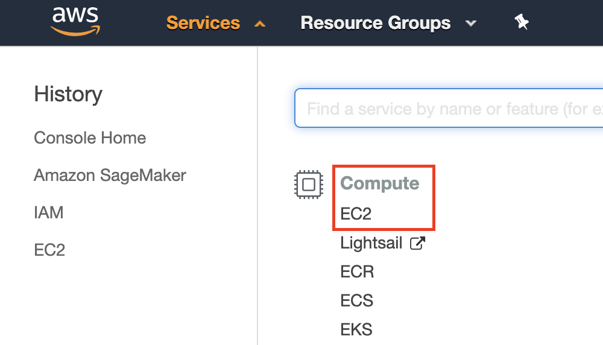

使用Amazon EC2实例
:label:sec_aws
本节将展示如何在原始Linux机器上安装所有库。回想一下， :numref:sec_sagemaker讨论了如何使用Amazon SageMaker，而在云上自己构建实例的成本更低。本演示包括三个步骤。
- 从AWS EC2请求GPU Linux实例。
- 安装CUDA（或使用预装CUDA的Amazon机器映像）。
- 安装深度学习框架和其他库以运行本书的代码。
此过程也适用于其他实例（和其他云），尽管需要一些细微的修改。在继续操作之前，你需要创建一个AWS帐户，有关更多详细信息，请参阅 :numref:sec_sagemaker。
创建和运行EC2实例
登录到你的aws账户后，单击“EC2”（在 :numref:fig_aws中用红色方框标记）进入EC2面板。

:width:400px
:label:fig_aws
:numref:fig_ec2显示EC2面板，敏感帐户信息变为灰色。
 :width:
:width:700px
:label:fig_ec2
预置位置
选择附近的数据中心以降低延迟，例如“Oregon”（俄勒冈）( :numref:fig_ec2右上角的红色方框）。如果你位于中国，你可以选择附近的亚太地区，例如首尔或东京。请注意，某些数据中心可能没有GPU实例。
增加限制
在选择实例之前，请点击 :numref:fig_ec2所示左侧栏中的“Limits”（限制）标签查看是否有数量限制。 :numref:fig_limits显示了此类限制的一个例子。账号目前无法按地域打开p2.xlarge实例。如果你需要打开一个或多个实例，请点击“Request limit increase”（请求增加限制）链接，申请更高的实例配额。一般来说，需要一个工作日的时间来处理申请。
 :width:
:width:700px
:label:fig_limits
启动实例
接下来，单击 :numref:fig_ec2中红框标记的“Launch Instance”（启动实例）按钮，启动你的实例。
我们首先选择一个合适的Amazon机器映像（Amazon Machine Image，AMI）。在搜索框中输入“ubuntu”（ :numref:fig_ubuntu中的红色框标记）。
 :width:
:width:700px
:label:fig_ubuntu
EC2提供了许多不同的实例配置可供选择。对初学者来说，这有时会让人感到困惑。 :numref:tab_ec2列出了不同合适的计算机。
:不同的EC2实例类型
| Name | GPU | Notes |
|---|---|---|
| g2 | Grid K520 | 过时的 |
| p2 | Kepler K80 | 旧的GPU但Spot实例通常很便宜 |
| g3 | Maxwell M60 | 好的平衡 |
| p3 | Volta V100 | FP16的高性能 |
| g4 | Turing T4 | FP16/INT8推理优化 |
:label:tab_ec2
所有这些服务器都有多种类型，显示了使用的GPU数量。例如，p2.xlarge有1个GPU，而p2.16xlarge有16个GPU和更多内存。有关更多详细信息，请参阅Amazon EC2 文档。
 :width:
:width:700px
:label:fig_p2x
注意，你应该使用支持GPU的实例以及合适的驱动程序和支持GPU的深度学习框架。否则，你将感受不到使用GPU的任何好处。
到目前为止，我们已经完成了启动EC2实例的七个步骤中的前两个步骤，如 :numref:fig_disk顶部所示。在本例中，我们保留“3. Configure Instance”（3. 配置实例）、“5. Add Tags”（5. 添加标签）和“6. Configure Security Group”（6. 配置安全组）步骤的默认配置。点击“4.添加存储”并将默认硬盘大小增加到64GB( :numref:fig_disk中的红色框标记)。请注意，CUDA本身已经占用了4GB空间。
 :width:
:width:700px
:label:fig_disk
最后，进入“7. Review”（7. 查看），点击“Launch”（启动），即可启动配置好的实例。系统现在将提示你选择用于访问实例的密钥对。如果你没有密钥对，请在 :numref:fig_keypair的第一个下拉菜单中选择“Create a new key pair”（新建密钥对），即可生成密钥对。之后，你可以在此菜单中选择“Choose an existing key pair”（选择现有密钥对），然后选择之前生成的密钥对。单击“Launch Instances”（启动实例）即可启动创建的实例。
 :width:
:width:500px
:label:fig_keypair
如果生成了新密钥对，请确保下载密钥对并将其存储在安全位置。这是你通过SSH连接到服务器的唯一方式。单击 :numref:fig_launching中显示的实例ID可查看该实例的状态。
 :width:
:width:700px
:label:fig_launching
连接到实例
如 :numref:fig_connect所示，实例状态变为绿色后，右键单击实例，选择Connect（连接）查看实例访问方式。
 :width:
:width:700px
:label:fig_connect
如果这是一个新密钥，它必须是不可公开查看的，SSH才能工作。转到存储D2L_key.pem的文件夹，并执行以下命令以使密钥不可公开查看：
chmod 400 D2L_key.pem
:width:400px
:label:fig_chmod
现在，复制 :numref:fig_chmod下方红色框中的ssh命令并粘贴到命令行：
ssh -i "D2L_key.pem" ubuntu@ec2-xx-xxx-xxx-xxx.y.compute.amazonaws.com
当命令行提示“Are you sure you want to continue connecting (yes/no)”（“你确定要继续连接吗？（是/否）”）时，输入“yes”并按回车键登录实例。
你的服务器现在已就绪。
安装CUDA
在安装CUDA之前，请确保使用最新的驱动程序更新实例。
sudo apt-get update && sudo apt-get install -y build-essential git libgfortran3
我们在这里下载CUDA 10.1。访问NVIDIA的官方存储库 以找到下载链接，如 :numref:fig_cuda中所示。
 :width:
:width:500px
:label:fig_cuda
将说明复制粘贴到终端上，以安装CUDA 10.1。
# 链接和文件名可能会发生更改，以NVIDIA的官方为准
wget https://developer.download.nvidia.com/compute/cuda/repos/ubuntu1804/x86_64/cuda-ubuntu1804.pin
sudo mv cuda-ubuntu1804.pin /etc/apt/preferences.d/cuda-repository-pin-600
wget http://developer.download.nvidia.com/compute/cuda/10.1/Prod/local_installers/cuda-repo-ubuntu1804-10-1-local-10.1.243-418.87.00_1.0-1_amd64.deb
sudo dpkg -i cuda-repo-ubuntu1804-10-1-local-10.1.243-418.87.00_1.0-1_amd64.deb
sudo apt-key add /var/cuda-repo-10-1-local-10.1.243-418.87.00/7fa2af80.pub
sudo apt-get update
sudo apt-get -y install cuda
安装程序后，运行以下命令查看GPU：
nvidia-smi
最后，将CUDA添加到库路径以帮助其他库找到它。
echo "export LD_LIBRARY_PATH=\${LD_LIBRARY_PATH}:/usr/local/cuda/lib64" >> ~/.bashrc
安装库以运行代码
要运行本书的代码，只需在EC2实例上为linux用户执行 :ref:chap_installation中的步骤，并使用以下提示在远程linux服务器上工作。
- 要在Miniconda安装页面下载bash脚本，请右击下载链接并选择“copy Link address”，然后执行
wget [copied link address]。 - 运行
~/miniconda3/bin/conda init, 你可能需要执行source~/.bashrc，而不是关闭并重新打开当前shell。
远程运行Jupyter笔记本
要远程运行Jupyter笔记本，你需要使用SSH端口转发。毕竟，云中的服务器没有显示器或键盘。为此，请从你的台式机（或笔记本电脑）登录到你的服务器，如下所示：
# 此命令必须在本地命令行中运行
ssh -i "/path/to/key.pem" ubuntu@ec2-xx-xxx-xxx-xxx.y.compute.amazonaws.com -L 8889:localhost:8888
接下来，转到EC2实例上本书下载的代码所在的位置，然后运行：
conda activate d2l
jupyter notebook
:numref:fig_jupyter显示了运行Jupyter笔记本后可能的输出。最后一行是端口8888的URL。
 :width:
:width:700px
:label:fig_jupyter
由于你使用端口转发到端口8889，请复制 :numref:fig_jupyter红色框中的最后一行，将URL中的“8888”替换为“8889”，然后在本地浏览器中打开它。
关闭未使用的实例
由于云服务是按使用时间计费的，你应该关闭不使用的实例。请注意，还有其他选择：
- “Stopping”（停止）实例意味着你可以重新启动它。这类似于关闭常规服务器的电源。但是，停止的实例仍将按保留的硬盘空间收取少量费用；
- “Terminating”（终止）实例将删除与其关联的所有数据。这包括磁盘，因此你不能再次启动它。只有在你知道将来不需要它的情况下才这样做。
如果你想要将该实例用作更多实例的模板，请右击 :numref:fig_connect中的例子，然后选择“Image”$\rightarrow$“Create”以创建该实例的镜像。完成后，选择“实例状态”$\rightarrow$“终止”以终止实例。下次要使用此实例时，可以按照本节中的步骤基于保存的镜像创建实例。唯一的区别是，在 :numref:fig_ubuntu所示的“1.选择AMI”中，你必须使用左侧的“我的AMI”选项来选择你保存的镜像。创建的实例将保留镜像硬盘上存储的信息。例如，你不必重新安装CUDA和其他运行时环境。
小结
- 我们可以按需启动和停止实例，而不必购买和制造我们自己的计算机。
- 在使用支持GPU的深度学习框架之前，我们需要安装CUDA。
- 我们可以使用端口转发在远程服务器上运行Jupyter笔记本。
练习
- 云提供了便利，但价格并不便宜。了解如何启动spot实例以降低成本。
- 尝试使用不同的GPU服务器。它们有多快？
- 尝试使用多GPU服务器。你能把事情扩大到什么程度？